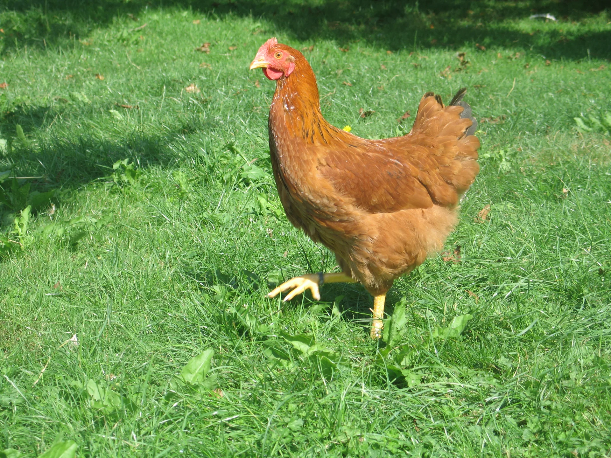
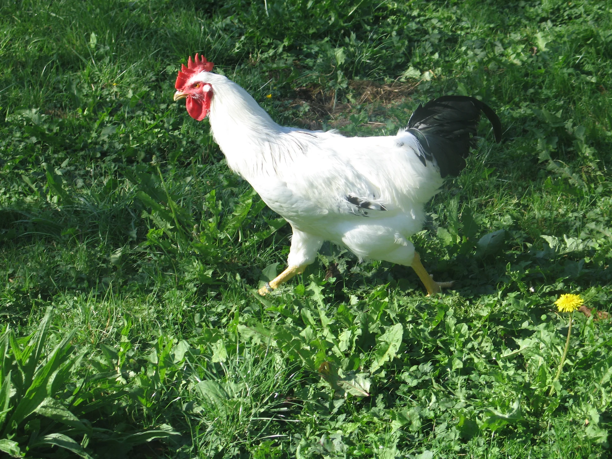

Euskal Oiloa: la gallina vasca, en rojo, blanco y negro

Ebook recomendado
Gallinas Ponedoras
Empieza tu producción de huevos con la guía completa.
Ver el ebook
La Euskal Oiloa es la gallina autóctona del País Vasco, una de las razas españolas mejor conservadas y más populares. Es una gallina de caserío de origen antiguo, seleccionada durante siglos en los baserris por su puesta y su rusticidad, y reconocida oficialmente como raza autóctona vasca. Hoy es la raza mejor cubierta de este catálogo —3 fotos de 3, todas con buena resolución— y una de las razas autóctonas con más futuro comercial, porque une puesta, carne y una imagen inconfundible.
Origen e historia
La Euskal Oiloa es la gallina autóctona del País Vasco, una de las razas españolas mejor conservadas y más populares. Es una gallina de caserío de origen antiguo, seleccionada durante siglos en los baserris por su puesta y su rusticidad, y reconocida oficialmente como raza autóctona vasca. Su recuperación moderna la impulsaron los criadores vascos y las asociaciones de la raza, que fijaron el estándar con sus variedades de color y la dieron a conocer en ferias y exposiciones de todo el norte. Hoy es la raza mejor cubierta de este catálogo —3 fotos de 3, todas con buena resolución— y una de las razas autóctonas con más futuro comercial, porque une puesta, carne y una imagen inconfundible.
Características físicas
La gallina: ave de tamaño medio-grande, de unos 2,5 kg, de cuerpo redondeado y compacto, con el pecho ancho y la cola de tamaño medio, llevada en ángulo de unos 45 grados. Su cresta es sencilla y de tamaño mediano, con cinco puntas, y las orejillas son rojas. Las patas son amarillas, limpias y fuertes.
El gallo: de 3,5 a 4 kg, de porte erguido y orgulloso, con esclavina y manto de color intenso según la variedad, hoces largas y brillantes, y una cresta sencilla grande y bien dentada. Es un gallo vistoso y de movimientos pausados, que domina el corral sin aspavientos.
Variedades de plumaje
Es la raza con más variedades de color de este catálogo, y todas se reconocen por su nombre en euskera: gorria (roja), la más típica, con gallina de color rojo caoba y gallo de rojo intenso; zilarra (plateada o blanca), de plumaje blanco con reflejos; beltza (negra), negra con brillo verde; marraduna (barrada), de plumaje listado; y lepasoila (de cuello amarillo), con el cuello dorado. Cada variedad tiene su afición y sus criadores, y todas comparten la misma estructura.
Puesta
Es una de las mejores ponedoras camperas de España: en torno a 200 huevos al año, de color marrón claro, a veces rosado, y de buen tamaño. Pone con regularidad durante todo el año, con un parón corto en la muda, y mantiene la puesta en invierno mejor que la mayoría de razas autóctonas. Las gallinas son buenas cluecas si se les deja, aunque en puesta comercial se les retira el nido.
Carácter
Rústica, tranquila y muy adaptable: es una gallina de caserío que se mueve bien en libertad, picotea sin alejarse demasiado y vuelve sola al gallinero al atardecer. Es mansa con el cuidador y sociable con otras aves, y el gallo es protector sin ser pendenciero. Es la raza recomendada para quien empieza con gallinas autóctonas.
Cuidados, alimentación y alojamiento
Necesita lo que necesita cualquier gallina de caserío, bien hecho: un gallinero seco, ventilado y sin corrientes, con perchas y nidales (uno por cada 4 gallinas), y un buen prado para campear —4–5 m² por ave como mínimo. Es muy resistente al frío y a la lluvia del Cantábrico, pero sufre con el calor extremo, por lo que conviene sombra y agua fresca en verano. Come pienso de puesta, grano y forraje; aprovecha muy bien el pasto y los restos de huerta, y con una dieta variada mantiene la puesta sin suplementos caros. Es una raza longeva para una ponedora: una gallina bien cuidada pone bien durante tres años.
Para qué sirve
Doble aptitud con acento en el huevo: es la ponedora campera por excelencia entre las razas vascas, y su pollo, de crecimiento medio y carne sabrosa, es el pollo de caserío tradicional. Su variedad de colores la hace también atractiva como raza ornamental de corral, y su nombre en euskera es un argumento de venta para el producto local.
Curiosidades
«Euskal Oiloa» significa, sencillamente, «gallina vasca»; sus variedades se nombran en euskera —gorria, zilarra, beltza— y cada una tiene sus concursos en las ferias vascas; es la única raza de este catálogo que llega a las 200 puestas al año sin ser una estirpe industrial; y la foto de grupo de esta ficha, con un gallo rojo y cinco gallinas bajo un árbol, es la foto de grupo más limpia de todo el lote.
Fotos de la raza


Fotos y licencias
Las fotos de esta ficha son fotografías reales con licencia libre de uso comercial. La licencia CC BY-SA 3.0 exige atribuir al autor y compartir las adaptaciones bajo la misma licencia. Las fotos se publican en WebP a partir de los originales, con su autor y su licencia. Es la raza mejor cubierta del catálogo: 3 de 3 fotos, todas con resolución suficiente.
- Grupo (foto principal): Joxemai — CC BY-SA 3.0 (26-07-2012).
- Gallina (variedad gorria): Jose Maria Plazaola Erostarbe — CC BY-SA 3.0 (2004).
- Gallo (variedad zilarra): Jose Maria Plazaola Erostarbe — CC BY-SA 3.0 (2004).


Fuentes
Datos raciales contrastados con la información de la raza: Euskal Oiloa gorria (Euskal Abereak).
Prepara tu lote y tu gallinero
Antes de comprar aves, calcula el espacio que necesitas, lo que costará alimentarlas y cuándo tendrás los primeros huevos.
Comprueba la normativa local: algunas zonas exigen registrar las aves o avisar al ayuntamiento. Revisa las normas de tu municipio antes de criar.